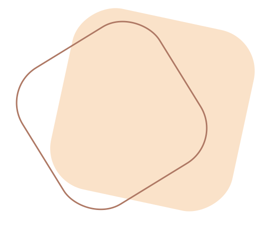

350 000
femmes ne savent pas s’acheter de protections périodiques
Qu’est ce que la précarité menstruelle ?
C’est la difficulté financière, le manque d’accès aux protections périodiques. Par manque de moyen financier, parfois certaines femmes doivent faire un choix entre se nourrir, se protéger ou autre !
Mais ce n’est pas tout, ce n’est pas qu’une question d’argent, certaines femmes font face à ce problème à cause du manque d'installations sanitaires, si celles-ci ne sont pas adaptées, propres ou sécurisées pour se changer cela peut engendrer un sentiment de précarité !
La cause ?
Le prix de ses protections, une femme doit débourser entre 5-12€ chaque mois ce qui peut être un frein pour certaines qui ne savent pas faire face à cette dépense.
Sans compter les médicaments, les rendez-vous gynécologiques et autres. Ce qui amène à des dépenses allant jusqu'à 675 € par an !
Parfois celle-ci n'est pas financière, elle peut être dû à un manque d’explication par rapport au cycle menstruel, elles ne sont pas informées vis à vis de ce qu’il faut utiliser, mais surtout elles n’osent pas en parler car ce sujet est encore trop tabou.
Qu’utilisent-elles comme protections périodiques ?
Il faut savoir que certaines femmes qui ne savent pas avoir accès à ces protections trouvent d'autres moyens pour se protéger lors de leurs règles, cela peut passer du papier journal à l’essuie tout, des chaussettes, etc. Mais celles-ci risquent alors d’attraper des infections ou même d'avoir un choc toxique en portant celles-ci.

Les étudiantes dans tout ça ?
80 000 étudiantes font partie des 350 000 femmes en précarité !
Plus de 25 000 jeunes ont déjà raté les cours faute de protections périodiques.
En Belgique on en est où ?
2017 ● Taxe sur les protections passe à 6%
Grâce au mouvement La Taxe au tampon, la taxe sur les protections hygiéniques est passée de 6% au lieu de 21%. C'est donc un besoin de première nécessité et non de luxe.
2020 ● Gratuité des protections ?
La députée Ludivine Dedonder a fait une proposition à la chambre vis-à-vis de la gratuité de celles-ci.
2022 ● Début de la gratuité
Plusieurs distributeurs de protections périodiques jetables ont été installés dans les CPAS, plannings familiaux et les écoles Bruxelloises et Wallonnes, afin d'en bénéficier gratuitement. 1 million de protections ont pu être données.
2023 ● Primes, distributeurs, chèques
Plusieurs primes à l’achat ont été mises en place dans certaines provinces telles que Liège, Namur, Bruxelles et le Brabant Wallon dans le but de bénéficier d’un remboursement partiel sur les protections réutilisables.
Les distributeurs de protections périodiques jetables installés dans les CPAS, plannings familiaux vont être étendus sur toute la Wallonie, au vu de la demande qui évolue.
A Bruxelles, le CPAS a distribué des chèques de 60€ à échanger en magasins contre des protections périodiques, ils ont ainsi pu aider, 1100 étudiantes en situation précaire.
Dans le monde ?
En France, Le taux de TVA a changé sur les protections, qui est passé de besoin de luxe à 15% à besoin de première nécessité à 5,5%.


Liste des lieux où tu peux en retrouver gratuitement
- Plannings familiaux
- CPAS
- Associations
- Bruzelle
- Sang soucis
- PMS
- Cellules sociales étudiantes
- Écoles
- Universités/Hautes Écoles
Bruzelle
Association qui propose plusieurs points de collecte où tu peux déposer des serviettes hygiéniques ainsi que du tissu, ce qui leur permettra de créer de jolies trousses pour mettre les serviettes. Plusieurs points de collecte sont dispos en Wallonie, Bruxelles et quelques-uns en Flandre
Sang soucis
Associations des plannings familiaux liégeois qui récoltent des serviettes et tampons pour les redistribuer dans des associations pour les femmes par la suite.